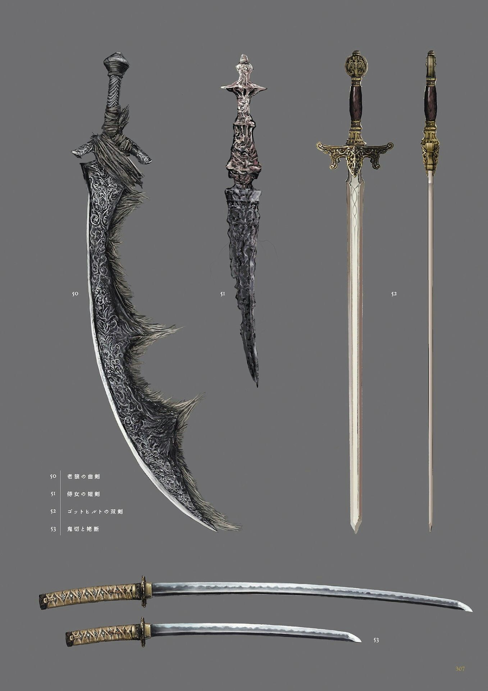
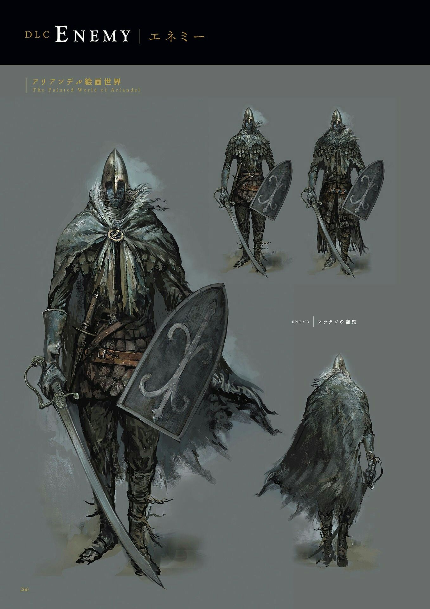

About Dark Souls
Gameplay Mechanics
Dark Souls features a unique combat system that emphasizes precise timing, strategic positioning, and careful stamina management. Unlike many action games, combat here is not about button-mashing or overwhelming firepower, but about patience, observation, and perfect execution. Players must learn to read enemy attack patterns, manage their stamina bar to avoid fatigue, and time their dodges and parries perfectly. Death is not a punishment but a teacher - each defeat provides valuable lessons that help players improve and eventually overcome even the most formidable challenges.

Story and Lore
The narrative of Dark Souls is masterfully woven through item descriptions, environmental clues, NPC dialogues, and subtle world-building rather than traditional cutscenes or lengthy exposition. Players piece together the story like detectives, uncovering ancient secrets, forgotten histories, and the interconnected fates of gods, dragons, and mortals. The lore explores themes of cycles, undeath, the burden of power, and the inevitable decay of all things. This approach creates a deeply immersive experience where every detail feels significant and every discovery feels earned.

Key Elements
- Exploration of vast, interconnected worlds
- Co-op and PvP multiplayer features
- Multiple endings based on player choices
- Deep customization through leveling and equipment
The Art of Dying
Death is not a setback in Dark Souls; it's a learning opportunity. Each defeat teaches players about enemy patterns, optimal strategies, and the importance of preparation.
Exploration and Discovery
The games reward curiosity and thorough exploration with generous bonuses. Hidden areas tucked away in forgotten corners, secret bosses guarding ancient treasures, and alternate paths that reveal entirely new sections of the world offer hours of additional content for dedicated explorers. These discoveries not only provide powerful equipment and rare items but also deepen the understanding of the game's lore and history. The satisfaction of finding these hidden gems becomes a major part of the appeal, encouraging players to leave no stone unturned in their quest.
- Shortcut creation for faster navigation
- Illusory walls and hidden doors
- Optional areas with unique challenges
- Environmental puzzles and traps
Combat Philosophy
Combat in Dark Souls is fundamentally about patience, precision, and mastery over one's impulses. Rather than relying on overwhelming firepower or complex combo systems, the game demands that players master the art of parrying, dodging, and perfectly timing their attacks. Every swing, every roll, and every spell cast must be executed with deliberate intent. This philosophy transforms combat from a frantic button-mashing exercise into a tense dance of anticipation and reaction, where understanding your enemy becomes as important as your own skill. The result is battles that feel deeply satisfying and intellectually engaging, rewarding not just reflexes but strategic thinking and adaptability.